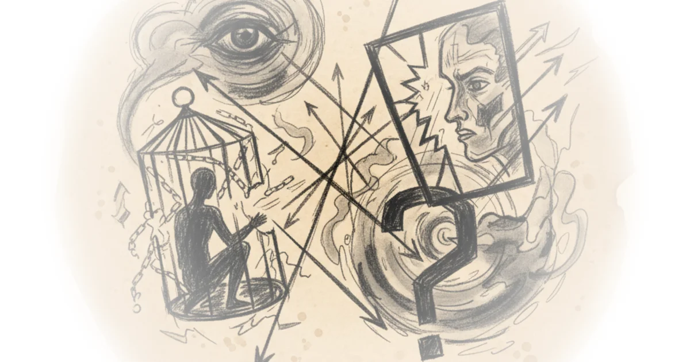
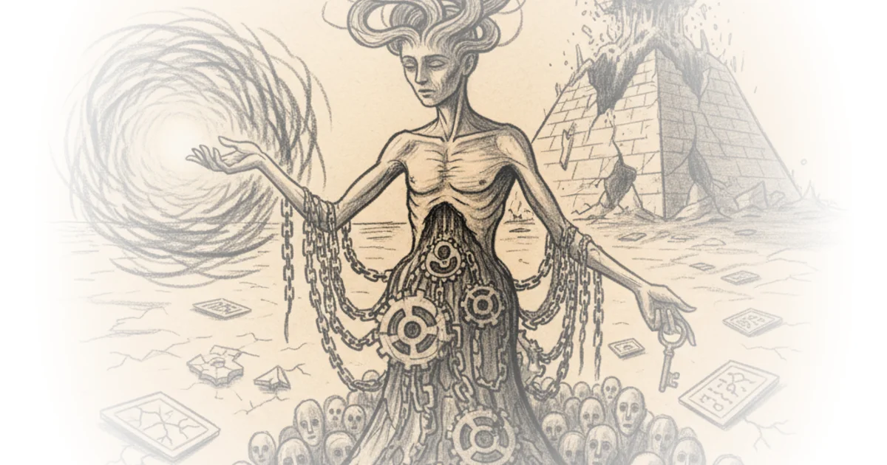
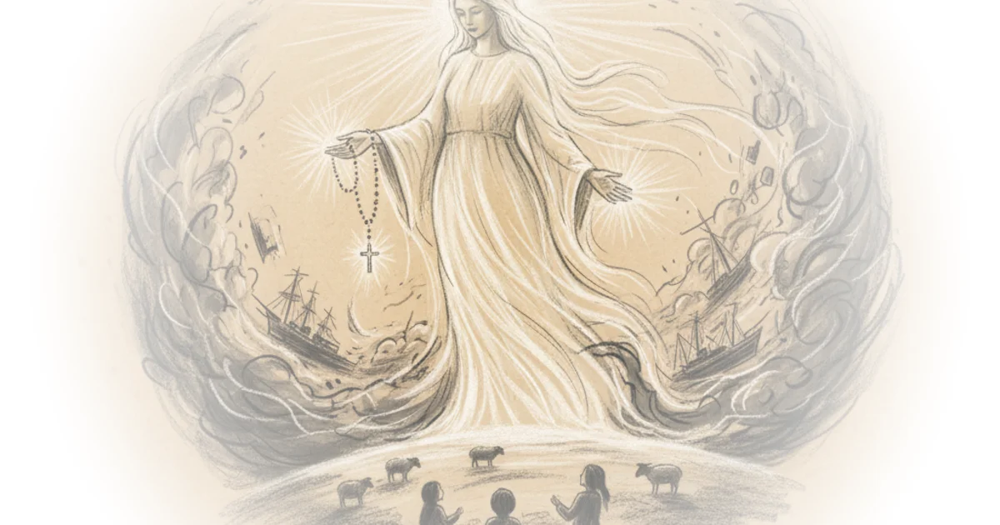

Poetry as Spiritual Practice Close Reading Poetry · Close Reading Poetry ·Nov 1, 2025 · 10 min read · Writing & Craft
Why Ancient Christian Artists Gave Jesus a "Magic" Wand Andrew Henry · Religion For Breakfast ·Oct 30, 2025 · 24 min read · History
Hollywood’s Music Biopic Boom: Quantifying the Rise of a Soulless Genre Daniel Parris · ·Oct 29, 2025 · 11 min read
Synthetic opioids management in Sino–American relations: focus on fentanyl by Zha Daojiong Zichen Wang · Pekingnology ·Oct 29, 2025 · 26 min read · China
How we produce healing in a world that has forgotten who we are Sarah Bessey · Sarah Bessey's Field Notes ·Oct 27, 2025 · 15 min read · Public Health
From Survival to Scripture: Bear Grylls on Faith and Doubt Alex O'Connor · Cosmic Skeptic ·Oct 26, 2025 · 67 min read
Why These Christians Worship with Deadly Snakes Andrew Henry · Religion For Breakfast ·Oct 24, 2025 · 18 min read
Ellul on Praxis Anarchierkegaard · Kierkegaardian Reflections ·Oct 22, 2025 · 18 min read · Philosophy
Learning as If Life Depended on It Jonathan Rowson · The Joyous Struggle ·Oct 22, 2025 · 12 min read · Culture
The Prophet Idrīs: The Islamic Enoch? Andrew Henry · Religion For Breakfast ·Oct 21, 2025 · 17 min read · History
Wait, We're the Oppressed Ones? Part Seven Various · Faithful Politics ·Oct 21, 2025 · 11 min read · Political Strategy 
Was Jesus an Ancient Magician? - Religion for Breakfast Alex O'Connor · Cosmic Skeptic ·Oct 19, 2025 · 70 min read · History
Why Religions Survive When Prophecies Fail Andrew Henry · Religion For Breakfast ·Oct 16, 2025 · 21 min read · Philosophy
Secular Messianism Anarchierkegaard · Kierkegaardian Reflections ·Oct 15, 2025 · 12 min read · Philosophy 
The Battle for the Soul of American Higher Education Roger Pielke Jr. · The Honest Broker ·Oct 14, 2025 · 10 min read · Culture
Excavating Göbekli Tepe: An Interview with Archaeologist Jens Notroff Andrew Henry · Religion For Breakfast ·Oct 13, 2025 · 55 min read · History
Does God Know What Time It Is? - Emily Qureshi-Hurst Alex O'Connor · Cosmic Skeptic ·Oct 12, 2025 · 61 min read · Philosophy
Day on Marx and Prayer Anarchierkegaard · Kierkegaardian Reflections ·Oct 10, 2025 · 12 min read · Philosophy
BioByte 135: improvements to biosecurity screening, Cptac-Protstruct and Kronos demonstrate LLM… Matthew's Biotech Musings · ·Oct 9, 2025 · 13 min read · AI & Tech
Whose Judgement? Which Rationality? Anarchierkegaard · Kierkegaardian Reflections ·Oct 6, 2025 · 10 min read · Philosophy
Towards a Theory of the Christian Deed Anarchierkegaard · Kierkegaardian Reflections ·Oct 3, 2025 · 30 min read · Philosophy
Is Witchcraft Going Mainstream? Andrew Henry · Religion For Breakfast ·Sep 30, 2025 · 45 min read · Culture
The Fox, the Forest, and the Frogs Jonathan Rowson · The Joyous Struggle ·Sep 30, 2025 · 11 min read · Culture
10 Spiritual Books from Indigenous Leaders Sarah Bessey · Sarah Bessey's Field Notes ·Sep 29, 2025 · 12 min read
Import AI 429: Eval the world economy; singularity economics; and Swiss sovereign AI Jack Clark · Import AI ·Sep 29, 2025 · 18 min read · AI & Tech
Day 5: Another Bad Day for Google as the Spirit of De Tocqueville Looms Jerry Cayford · ·Sep 28, 2025 · 10 min read
What Everyone Gets Wrong About Elves in Iceland Andrew Henry · Religion For Breakfast ·Sep 26, 2025 · 18 min read · Culture
Marian Apparitions Explained: The Mysterious Appearances of the Virgin Mary Andrew Henry · Religion For Breakfast ·Sep 19, 2025 · 31 min read 